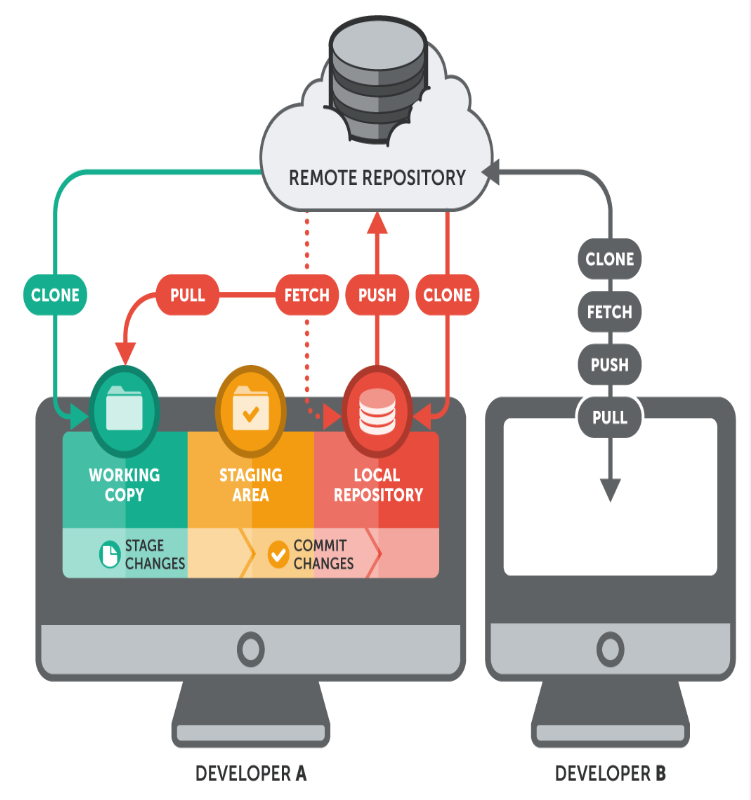

Luồng làm việc cơ bản với Git
Cách thức hoạt động cơ bản khi làm việc với Git.
Tất nhiên rồi! Đối với những proDev, lỡ có quên... chỉ một dòng lệnh: $ git help -a là lại Ok. Nhưng với những bạn mới dù $ git help -a thì cũng không biết bắt đầu từ đâu? Không biết thực thi dòng lệnh nào trong giai đoạn nào?
Các bạn đừng quá lo lắng, bức tranh tổng quát sau sẽ giúp các bạn phần nào giải tỏa được những băn khoăn đó:
Trong hướng dẫn này, tôi mặc định rằng các bạn đã có cho mình một tài khoản GitHub và thành thạo với việc tạo một kho lưu trữ từ xa (remote repository) trên GitHub nha. (Phần này tạo trên GitHub) Nếu bạn nào chưa tạo được remote repository thì xem lại bài giảng này nhé:

A/. Quy trình chủ động: (Bạn chủ động triển khai một dự án mới)
1/. Cài đặt, tạo tài khoản Github:
-
Bạn có thể tạo Github account tại đây https://github.com/signup/free
-
Cài đặt Github client vào máy cá nhân https://desktop.github.com/
2/. Cấu hình Github client để làm việc với máy chủ Github
-
Cấu hình Github client được hướng dẫn cụ thể trên Github, mình xin tóm lược một số bước chính:
-
Tạo SSH key: https://github.com/centic9/generate-and-send-ssh-key
-
Cài đặt thông tin cá nhân:
$ git config --g user.name “Tên của bạn”
$ git config --g user.email “Địa chỉ email của bạn”
3/. Khởi tạo repo:
- Khởi tạo thư mục repo trên máy client (máy của lập trình viên)
mkdir (Đường dẫn bạn muốn đặt thư mục repo)
cd (Tên repo vừa tạo) để chuyển sang repo đó làm việc
$ git init
4/. Đưa file từ client lên Github:
- Kết nối tới Github repo
$ git remote add origin git@github.com:(Tên repo)
Chú ý: Luôn cập nhật server trước khi push nội dung mới từ client lên bằng lệnh git pull:
$ git pull git@github.com:(Tên repo) main
Sau khi có một repo và kết nối với sever là bạn đã sẵn sàng cho việc ra mắt một dự án rồi.
Công việc bây giờ là: Code... code... và code...! và sau đó:
-
Kiểm tra trạng thái thay đổi
$ git status -
Add file vào danh sách commit (bỏ qua nếu không có file mới được tạo)
$ git add -A (all files) -
Commit những thay đổi trước khi push:
$ git commit -a -m “Thông tin về commit”(-a Tất cả thay đổi) -
Tải lên server nhánh main
$ git push -u origin main -
Tạo nhánh (branch) riêng:
-
Xem toàn bộ các nhánh đang có
$ git branch -a -
Tạo nhánh mới
$ git branch<tên mới> -
Chuyển nhánh
git checkout<tên nhánh> -
Xóa nhánh
$ git branch -d<Tên branch> -
Nhập nhánh con vào nhánh hiện tại
$ git merge<Tên nhánh>
5/. Settings và xuất bản GitHub Pages thôi nào!
B/. Quy trình bị động: (Bạn được Sếp giao hoặc tham gia dự án cùng Team)
- Từ bước 1 đến bước 3 (Tương tự như trên)
Chỉ khác là sau bước 3 thì bước tiếp theo là bạn Clone dự án: (Sau khi tạo repo thành công) Chắc chắn rằng bạn đang đứng tại repo cần lưu dự án và chạy lệnh:
$ git clone <url> (Địa chỉ dự án bạn muốn Clone)
Rồi lại tiếp tục Code... code... theo yêu cầu và lặp lại quy trình các bước như trên để xuất bản dự án.
Trên đây là một số bước cơ bản để làm việc nhóm với Git. Mục đích chính của mình nhằm giúp các bạn hiểu được các giai đoạn sử dụng dòng lệnh cho phù hợp. Còn thực chất một quy trình làm việc nhóm thực tế sẽ còn rất nhiều công đoạn, nhiều việc phải làm... Nhưng cũng chỉ xoay quanh một số lênh thường dùng bạn nên nắm chắc và hiểu về chúng!
- Liệt kê một số lệnh hay dùng
touch “tên file” (Tạo 1 file)
echo “nội dung” > “tên file” (viết nội dung vào trong file)
git remote add origin git@github.com:<tên repo> (Tạo kết nối tới Github server)
git pull git@github.com:<tên repo> <tên branch> (Cập nhật dữ liệu từ server)
git status (Xem trạng thái hiện tại)
git add -A (add all file đã thay đổi, chuẩn bị cho commit)
git commit -a -m “Thông tin note” (commit all file để chuẩn bị push)
git push origin <+ tên nhánh muốn push lên> (Gửi nội dung đã commit lên server vào nhánh...)